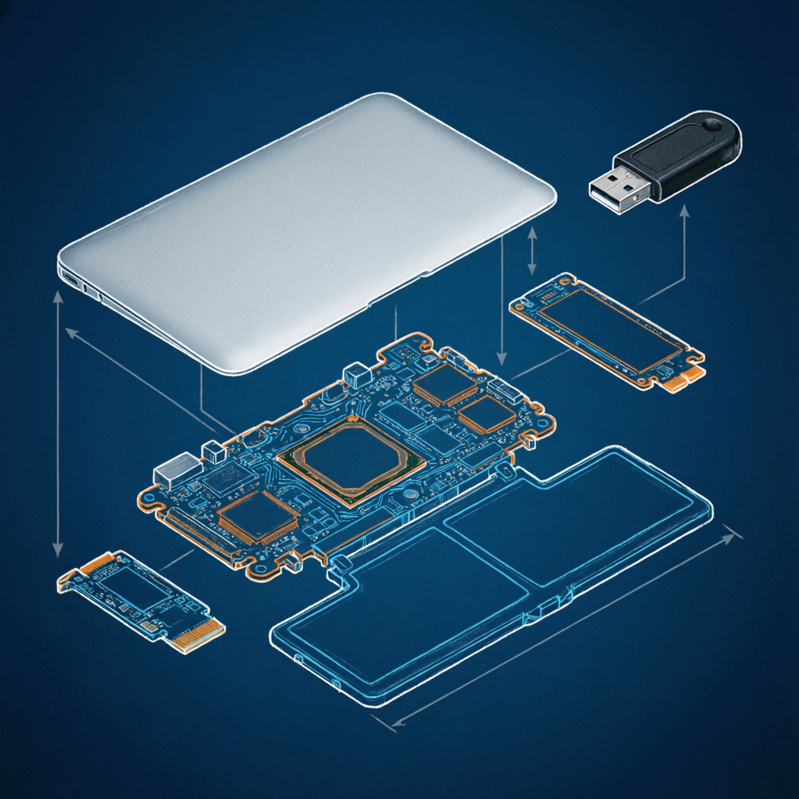

Pourquoi ce sujet plutôt qu'un autre
Le choix s'est porté sur le sujet n°1 — dual-boot sur Mac Intel. Ce n'est pas un coup de cœur : c'est une décision prise critère par critère, en regardant la fiche officielle et la réalité du format de soutenance. Voici le raisonnement, formalisé.
Risque administratif nul
Le sujet correspond mot pour mot aux exemples de la fiche officielle : « installation ou modification d'une configuration existante ». Aucune justification à produire, aucun sujet à « vendre » au chargé de cours — il rentre directement dans le moule.
De la matière déjà disponible
Le plan de soutenance est déjà construit, et l'expérience pratique accumulée (Filius, Linux, Proxmox) alimente directement les parties systèmes d'exploitation et matériel. On ne part pas de zéro.
Les quatre critères couverts d'office
Actes techniques (partitionnement, bootloader, configuration), analyse de situation (pourquoi le dual-boot, contraintes du Mac Intel), dysfonctionnements (pilotes Wi-Fi, Bluetooth, graphique — attendus, donc documentables), vocabulaire technique (EFI, GRUB/rEFInd, partitionnement).
Un format 15 minutes maîtrisable
Une installation / configuration bien rodée se raconte clairement en 15 minutes. Un sujet logiciel exigerait d'expliquer le code, l'architecture et les trois axes — risque réel de déborder ou de bâcler une partie.
| Critère de choix | Dual-boot Mac Intel | Sujet logiciel (n°2) |
|---|---|---|
| Conformité à la fiche | ✔ Exemple cité mot pour mot | ◐ À justifier auprès du chargé de cours |
| Matière disponible | ✔ Plan prêt + expérience Linux/Proxmox | ✖ À construire intégralement |
| Actes techniques | ✔ Partitionnement, bootloader, pilotes | ✔ Développement, déploiement |
| Dysfonctionnements documentables | ✔ Wi-Fi / BT / GPU / webcam — par construction | ◐ Aléatoires, difficiles à provoquer |
| Tenue des 15 minutes | ✔ Récit linéaire d'une installation | ✖ Code + architecture + 3 axes : débordement fréquent |
| → Verdict : le dual-boot Mac Intel est retenu — conformité maximale, risque minimal. | ||
Les quatre axes de la fiche d'évaluation
Chaque exigence de la fiche trouve une réponse concrète dans le travail. Rien n'est laissé à l'interprétation : pour chaque critère, on sait exactement ce qui sera présenté et comment il sera prouvé.
Actes techniques précis
- Partitionnement GPT (réduction APFS via
diskutil, création viagdisk) - Installation de rEFInd puis de GRUB, configuration de la NVRAM
- Mise en place du
fstabet des points de montage - Installation des pilotes (
bcmwl,i915, firmware)
Analyse de la situation
- Arbitrage dual-boot vs machine virtuelle (performances natives, accès matériel)
- Contraintes du Mac Intel : EFI, APFS, ESP partagée, absence de puce T2 sur ce modèle
- Choix justifié de la distribution et du plan de disque (SSD 128 / 256 Go)
Dysfonctionnements & solutions
- Journal de bord tracé : Wi-Fi, Bluetooth, webcam, os-prober, horloge RTC
- Méthode de diagnostic systématique :
dmesg,lspci,journalctl - Chaque incident = symptôme → cause → solution vérifiée
Vocabulaire technique
- EFI, ESP, GPT, APFS, ext4, bootloader, noyau, firmware, NVRAM,
bless, DKMS - Emploi naturel tout au long du rapport et de la soutenance
- Glossaire complet fourni en annexe
La machine, le disque, l'amorçage

bputil et une sécurité réduite. Le MacBook Air Early 2015 y échappe totalement : démarrage libre, ESP standard, aucun compromis de sécurité à documenter en urgence. C'est précisément ce qui rend ce modèle idéal pour le sujet.
diskutil list ou sudo gdisk -l /dev/disk0 montrant les partitions après installation.Largeurs indicatives pour la lisibilité (ESP et Recovery surdimensionnées à l'écran). L'ESP existante est partagée entre les deux systèmes — aucun firmware n'est réinstallé. Basculez 128 / 256 Go selon la capacité réelle de votre SSD.
rEFInd en premier : menu graphique, détection automatique des noyaux, retour macOS toujours disponible. GRUB reste en secours (chainload) — redondance voulue.
Sauvegarde intégrale
Time Machine + clone du disque. Aucun partitionnement sans filet de sécurité.
Réduction du conteneur APFS
Libérer de l'espace en fin de disque sans toucher aux données macOS.
diskutil apfs resizeContainer disk1 60G # 125G si SSD de 256 GoCréation des partitions Linux
Types GPT 8300 (Linux) et 8200 (swap) dans l'espace libéré.
sudo gdisk /dev/disk0 # puis n / 8300 / 8200 / wBoot sur clé USB Ubuntu (EFI)
Touche ⌥ (Option) au démarrage, sélection de l'entrée « EFI Boot ».
Installation manuelle « à côté »
/ en ext4, swap, montage de l'ESP existante sans la formater.
Installation de rEFInd
Depuis Ubuntu ; inscription du chargeur dans la NVRAM via efibootmgr.
sudo apt install refind && sudo refind-installInstallation des pilotes
Wi-Fi propriétaire + firmware générique + webcam (DKMS), puis vérification matérielle.
sudo apt install bcmwl-kernel-source linux-firmware lspci -k | grep -A3 Network ; dmesg | grep brcmTests croisés & snapshot
Trois redémarrages sur chaque OS ; veille, Wi-Fi, son, clavier, webcam ; capture du journal.
| Composant | Référence | macOS | Linux (noyau 6.x) | Point de vigilance |
|---|---|---|---|---|
| Wi-Fi | Broadcom BCM4360 | natif AirPort | wl (bcmwl) ou b43 | Firmware propriétaire à installer après coup → pas de réseau pendant l'install : prévoir tethering USB. |
| Bluetooth | Broadcom BCM20702 · 4.0 | natif | btusb + linux-firmware | Redémarrage du service parfois nécessaire après une veille. |
| Graphique | Intel HD Graphics 6000 | Metal | i915 (intégré) | Accélération native dès le noyau 4.x ; écran 1440×900 non Retina → aucun réglage d'échelle HiDPI. |
| Audio | Cirrus CS4208 | natif | snd_hda_intel | Sortie parfois muette après veille → bascule à refaire. |
| Trackpad / clavier | USB · bcm5974 / hid-apple | natif | bcm5974 + hid-apple | Mapping ⌘/Ctrl à ajuster (hid-apple) ; gestes multipoints limités. |
| Webcam | FaceTime HD · Broadcom 1570 (PCIe) | native | facetimehd (DKMS) | Absent du noyau standard → pilote communautaire à compiler + firmware à extraire. |
| Horloge RTC | — | heure locale | UTC par défaut | Décalage de 2 h au changement d'OS → timedatectl set-local-rtc 1. |
lspci -k sous Ubuntu montrant les pilotes chargés pour le Wi-Fi, le GPU et la webcam.Le dual-boot offre un accès natif au matériel, sans couche de virtualisation. Le graphique ci-dessous compare les deux approches sur six critères pour décider de la configuration retenue.
Évaluations indicatives basées sur le MacBook Air Early 2015 (i5-5250U, 8 Go). La VM simulée est VirtualBox 7.x avec 4 cœurs et 4 Go alloués.
Les dysfonctionnements attendus
Les pannes ne sont pas des accidents : elles sont prévues, provoquées par la configuration, et constituent la matière première de la partie « analyse ». Chaque incident est tracé au format symptôme → diagnostic → cause → solution.
infoJ+1 · 09:14rEFInd installé mais macOS absent du menu+
Au démarrage, rEFInd ne propose que les entrées Linux ; le volume macOS n'apparaît pas.
Contrôle de refind.conf : directive scanfor trop restrictive.
Le scan des volumes internes APFS n'est pas activé par défaut sur cette configuration.
Ajout de scanfor internal,external,optical,manual dans refind.conf ; l'entrée macOS réapparaît au redémarrage suivant.
warnJ+2 · 14:22wlan0 introuvable après l'installation+
Aucune interface Wi-Fi ; ip link ne liste que lo et l'Ethernet.
lspci -nnk | grep -A3 Network → BCM4360, « Kernel driver in use: (none) ».
Le firmware propriétaire Broadcom n'est pas inclus dans le noyau par défaut.
Tethering USB puis sudo apt install bcmwl-kernel-source ; modprobe wl ; vérification par ip link. Documenté comme étape post-install obligatoire.
warnJ+3 · 11:48Bluetooth instable après une veille+
Le Bluetooth ne redécouvre plus les périphériques au réveil de la machine.
dmesg | grep -i bluetooth → échec de chargement du patch firmware.
Autosuspend USB du contrôleur btusb incompatible avec le firmware BCM20702.
Mise à jour de linux-firmware et désactivation de l'autosuspend : options btusb enable_autosuspend=0.
errJ+4 · 16:05GRUB ne propose plus macOS (os-prober)+
Après update-grub, seule Ubuntu apparaît dans le menu GRUB.
GRUB ≥ 2.06 désactive os-prober par défaut pour des raisons de sécurité.
GRUB_DISABLE_OS_PROBER=true implicite depuis la version 2.06.
GRUB_DISABLE_OS_PROBER=false dans /etc/default/grub + sudo update-grub. Stratégie retenue : déléguer le choix à rEFInd et garder GRUB en secours.
warnJ+5 · 08:30Horloge décalée de 2 h entre les deux OS+
L'heure est fausse sous Linux juste après un passage sous macOS (et inversement).
timedatectl : « RTC in local TZ: no » côté Linux.
macOS lit l'horloge matérielle en heure locale, Linux en UTC.
timedatectl set-local-rtc 1 --adjust-system-clock côté Linux (avec note du compromis dans le rapport).
errJ+6 · 10:12Webcam FaceTime HD inopérante sous Linux+
Aucune caméra détectée par les applications vidéo ; /dev/video0 absent.
lspci -nnk → « Broadcom Device 1570 », aucun pilote attaché.
La caméra FaceTime HD du MacBook Air est un périphérique PCIe propriétaire, sans pilote dans le noyau standard.
Installation du pilote communautaire facetimehd (bcwc_pcie) via DKMS, extraction du firmware, puis modprobe facetimehd — caméra fonctionnelle.
okJ+8 · 17:50Double amorçage stable sur 10 cycles+
Dix redémarrages alternés macOS / Linux sans anomalie ; Wi-Fi, Bluetooth, son, webcam et veille fonctionnels des deux côtés. Checklist de recette validée — la configuration est reproductible et documentée.
Le déroulé des 15 minutes
Quinze minutes, c'est court : chaque tranche est calibrée. Le cœur (la démonstration technique) occupe un tiers du temps ; l'analyse et les dysfonctionnements encadrent sans empiéter.
Introduction & contexte
Accroche autour de la machine · dual-boot ≠ virtualisation · annonce du plan.
Analyse de la situation
Pourquoi le dual-boot · contraintes du Mac Intel (EFI, APFS, absence de T2) · plan de disque justifié.
Actes techniques — démonstration
Réduction APFS, partitions, rEFInd/GRUB, boot sur les deux OS. Montrer, pas raconter.
Dysfonctionnements & solutions
Trois cas maximum (Wi-Fi, webcam, RTC) + méthode de diagnostic.
Conclusion & perspectives
Bilan au regard des objectifs · limites · ouvertures (Apple Silicon, OpenCore, virtualisation).
Huit semaines jusqu'à la soutenance
L'écriture du rapport démarre tôt et court en parallèle de la technique : pas de rédaction en urgence la dernière semaine. Les jalons sont placés là où ils débloquent la suite.
Bibliographie & références
Des sources de premier rang : documentation officielle des chargeurs, wikis communautaires reconnus, manuels constructeur. Le glossaire complet figurera en annexe du rapport.
EFI interface firmware · ESP partition système EFI (FAT32) · GPT table de partitions GUID · APFS système de fichiers Apple · NVRAM mémoire non volatile de boot · bless outil Apple de désignation du volume de démarrage · os-prober détection des OS tiers par GRUB · DKMS compilation de modules noyau hors arborescence · bootloader chargeur d'amorçage.